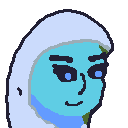

Story
I have the story planned out (if I ever get enough sequels) but I chose Torrin's Trial first.
- A Tutorial can be worked in if the main character is a novice when it comes to combat. Torrin is a wanderer first and a priest second. Her Crusader allies are veterans who can teach her about strategy.
- Demons invade the desert. Crusaders enter to finish them off. Torrin joins the Crusaders. Relatively simple story: kill demons dead.
- I'm not a professional artist, so art resources are limited. Keeping the player's squad small and the enemy squad mindless lets me focus on conserving resources.
Torrin lives in the Fell Desert, where elemental creatures dwell and the humans of the Western Kingdom
rarely
visit. She
struggles as the only living water elemental as a hermit. Most are terrified of her control over the
waterbed.
Others
want to drain her moisture for themselves. But the demonic abominations changed everyone's priorities
when they
ravaged
the desert. Enter the human Crusaders, trying to finish the War of Man.

Torrin found a friend in Sir Camil Willaahd, a Crusader who convinced her to seek solace in his patron
deity. The fiery
saboteur Birnam and the stoic statuesque Petra form a squad dedicated to stopping the demons once and
for
all. They are
highly effective together, and yet the demons still stand.
One night, Torrin finishes her prayer deep within the Crusader base. Inspiration strikes: the way to destroy
the demon
remnants altogether. But her time is short: Sir Camil calls for aid! Demons have snuck past base defenses
and are
heading straight for her.